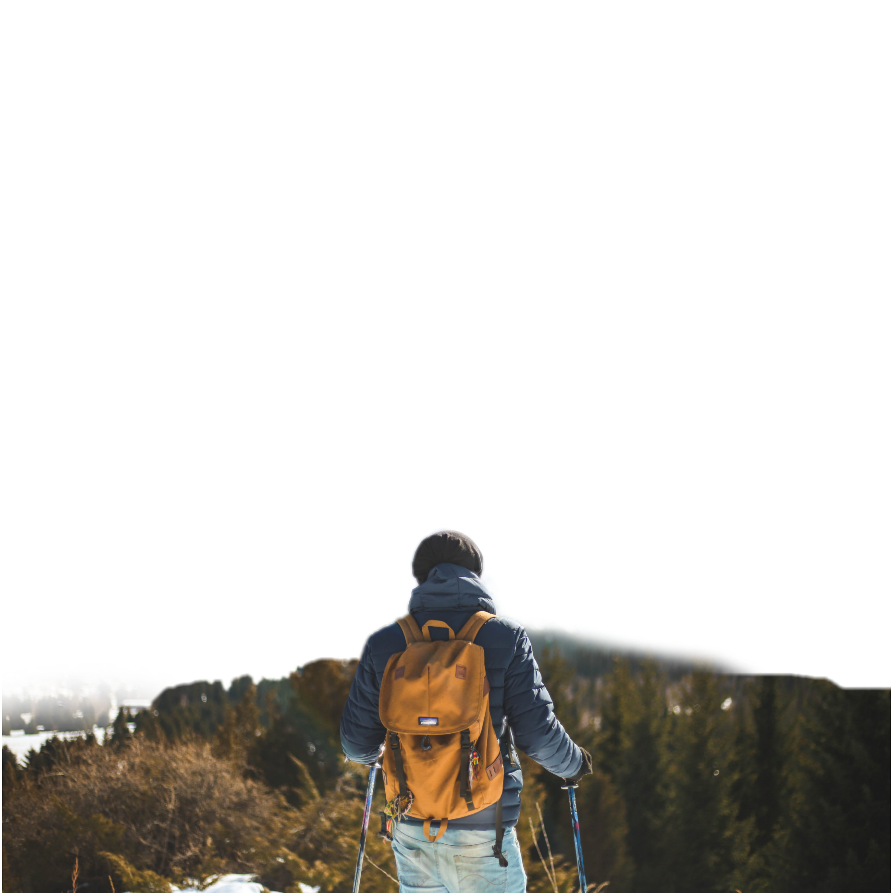
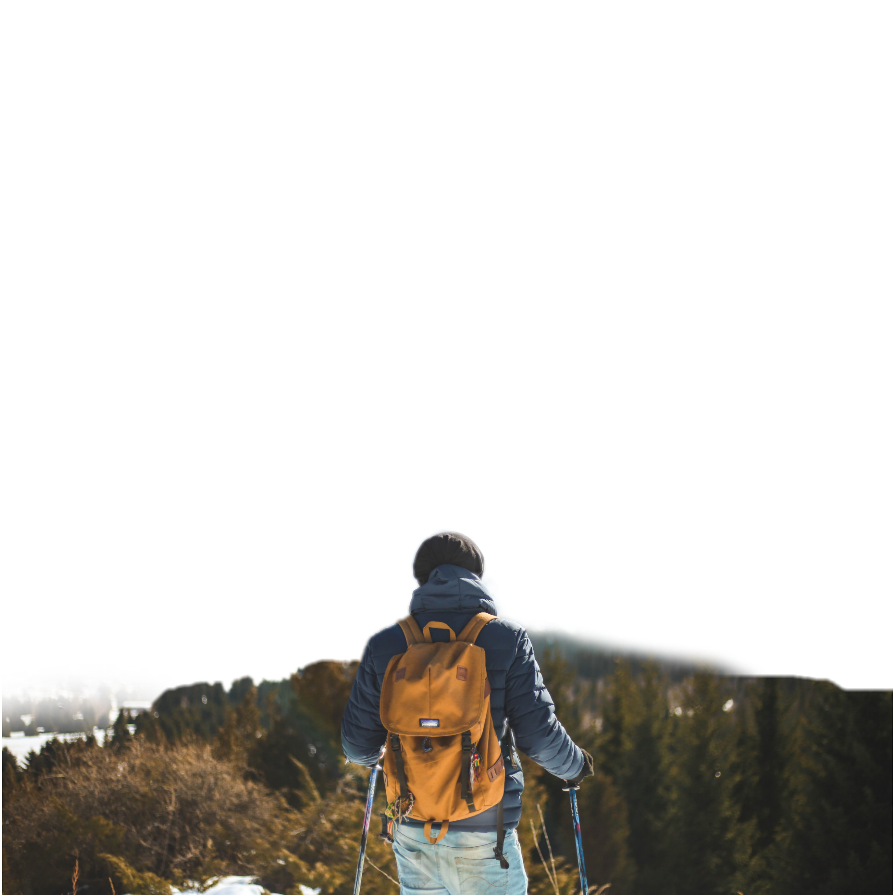

ADVENTURE
Adventure Time
In the heart of the untamed wilderness, I embarked on an extraordinary adventure. The air crackled with
anticipation as
I ventured into the unknown, driven by a thirst for discovery. Each step brought me closer to the edge
of my comfort
zone, where the magic happened. I climbed towering peaks, traversed roaring rivers, and delved into
mysterious caves.
Adrenaline fueled my veins as I pushed my limits, relishing the thrill of the wild. Amidst rugged
landscapes, I found
solace and clarity, forging an unbreakable bond with nature. The adventure became not just a physical
journey, but a
transformation of the soul.
BIKING
I hopped on my bike, the wind brushing against my face as I pedaled through the picturesque countryside.
The rhythmic
motion of my legs carried me forward, my worries left behind. Each stroke of the pedals brought a sense
of freedom and
exhilaration, reminding me of life's simple pleasures.
The city streets became my playground as I weaved through traffic on my trusty bicycle. The hum of cars
and the chatter
of pedestrians faded into the background as I embraced the thrill of the ride. With each turn of the
handlebars, I
discovered new hidden gems and felt the pulse of the urban rhythm.
PARA GLIDING
I soared through the sky, suspended by a canopy of colorful fabric and the thrill of flight. The wind
whispered in my
ears as I embraced the freedom of paragliding. With each gentle shift of my body, I navigated the
currents, dancing with
the clouds. The world below transformed into a breathtaking mosaic of landscapes and possibilities.
Adrenaline coursed through my veins as I experienced the rush of defying gravity. Time became a mere
abstraction as I
embraced the present moment, letting go of worries and embracing the sheer joy of gliding through the
heavens.
Paragliding, the ultimate fusion of adventure and serenity.
SURFING
I paddled out, the salty ocean embracing me as I anticipated the rush of the waves. Balancing on my
board, I scanned the
horizon for the perfect ride. The moment arrived, and I propelled myself forward, gliding along the face
of the wave.
The power beneath me fueled my adrenaline, while the gentle spray cooled my skin.
Time seemed to stand still as I carved graceful arcs, surrendering to the rhythm of the ocean. With each
wave conquered,
I felt a deep connection to nature and a profound sense of freedom. Surfing, an art form in harmony with
the sea, became
my sanctuary.
CLIMBING
With my hands gripping the rough rock face, I felt the exhilaration of vertical conquest. Every muscle
strained as I
ascended higher, my heart pounding with a mix of fear and determination. Each foothold and handhold
required focus and
precision, as I danced with gravity, defying its pull. The panoramic view unfolded as I reached the
summit, rewarding me
for my efforts.
The sense of accomplishment flooded my being, filling me with a profound connection to nature and
myself. In that
moment, I understood the allure of climbing—the blend of physical challenge, mental fortitude, and the
indescribable joy
of conquering new heights.